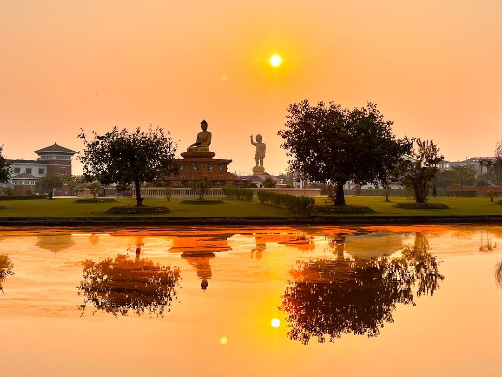

Real Story · 中文
我以为自己迟到了，后来才发现，也许是时间刚刚好。
10/12/2023 傍晚，我抵达 Lumbini。 因为已经接近 closing time，我几乎是赶着进去，想在有限的时间里多走一点、多看一点。
那一天，我一直觉得好像有什么事情在把我 hold back。 路上一直转来转去，时间一直被拖慢，让我没办法更早抵达 Lumbini Sanskritik。 当时我不明白为什么。
直到我走到这个位置，看见这一幕。
夕阳刚好落下，天空变成一片金橙色。 水面像第二个世界，把树、佛像、太阳和光全部倒映进去。 而就在同一个画面里，竟然同时出现了两种佛的象征： 一边是静坐成佛的佛像，另一边是佛陀诞生的形象——一手指天，一手指地。
其实，这两尊像并不在同一个 garden。 但就在那个时刻，我刚刚好走到一个位置，让它们在同一张照片里相遇。
那一刻我才明白，今天所有的 “迟到”，也许不是阻碍。 也许是为了把我带到这个准确的时间点。
如果我早一点到，光线不是这个光线。 如果我晚一点到，这一刻已经过去。 只有在那个 exact minute，夕阳、倒影、成佛与诞生，才一起落进同一个画面里。
有些记忆是人安排的。 有些记忆，是时间亲手交给你的。
这一幕，对我来说，就是后者。
English Memory Summary
The delay became the timing.
On 10/12/2023, Tuzi reached Lumbini in the late evening. There was not much time left before closing, so she hurried in for a short walk.
All day, she had felt as if something was holding her back. The route, the circles, and the timing kept delaying her arrival. At first, she did not understand why.
Then she reached a place where sunset, water reflection, and two different Buddhist symbols came together: the Buddha in meditation, and the image of the birth of Buddha, with one hand pointing to the sky and one hand pointing to the ground.
They were actually in two different garden spaces. But at that exact moment, from that exact position, both appeared in one picture.
If she had arrived earlier, the light would not have been the same. If she had arrived later, the moment would already have disappeared. What had felt like delay became the timing that made the photograph possible.
Heart Statement
我以为我迟到了。
后来才发现，也许我只是被带到刚刚好的那一分钟。
有些美，不会早到，也不会等你太久。 它只在一个很短的时间里打开。
I thought I was late. Perhaps I was only being led to the right minute.